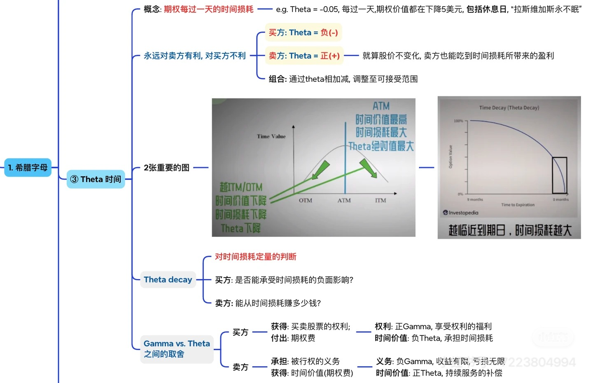

《美股期权教材》
第21章 Theta：时间损耗与持仓压力
本章主要基于以下图片材料整理并扩写：
Greeks 总纲，说明 Theta 是理解期权持仓体验的核心维度之一； 
Theta 主图，强调“期权每天都在流失时间价值”、ATM 与临近到期时损耗更明显，以及 Gamma 与 Theta 的此消彼长。 如果你只记一句话，那就是：
Theta 说的不是你对不对方向，而是“就算方向暂时没错，只要时间在走，你的期权会不会先被时间吃掉”。
很多新手第一次做 long call 或 long put，都有一个非常强烈的困惑：
- 我买的方向明明没完全错；
- 股价甚至还在我想的方向附近；
- 可期权价格就是一天比一天更难受。
这时候，真正压着你账户的，往往不是 Delta，而是 Theta。
Delta 讲的是“股价动一下，你的期权大概怎么动”； Theta 讲的是“哪怕股价先不怎么动，时间本身也会不会让你的期权变便宜”。
它决定的，是期权交易里一个很不舒服、但又必须接受的现实：
买方不仅要判断方向，还要和时间赛跑。

阅读导航：第一次读先抓“时间会不会先把你磨掉”，第二次读再补损耗速度
这一章第一次读，最重要的不是去记某个具体日损数字。
你先抓一句：
对期权来说，时间不是背景板，而是每天都在发生作用的成本。
第一遍只要看懂：
- 买方为什么更怕时间；
- 卖方为什么常常更喜欢时间过去；
- 为什么期权买方不只是方向对，还得及时对。
第二遍再去补：
- 为什么 ATM、临近到期的 Theta 体感更强；
- 为什么 Theta 不是固定日损表；
- 为什么正 Theta 也绝不自动等于低风险。
一、先把 Theta 讲成人话：它就是“时间每过一天，期权大概要掉多少”
21.1 期权不是股票，它自带保质期
股票没有到期日。
你买入一股 AAPL，只要公司没退市，你可以一直拿着。只要基本面、估值和市场风格允许，它不会因为“时间到了”就自动失效。
期权不一样。
期权从一开始就是一张有期限的合同：
- 到某个到期日之前，它还有交易价值；
- 一旦到期，时间价值这部分就会被结算掉；
- 到了最后，如果期权仍然是虚值，它会像保险到期一样归零。
这就是为什么，期权的世界里必须有一个专门衡量“时间流逝对价格的伤害”的量尺。
这个量尺，就是 Theta。
21.2 一个更正式但仍然实用的定义
按 Greeks 的常见定义，Theta 可以先这样理解：
在其他条件暂时不变的前提下，时间每过去一天，期权价格理论上会变化多少。
如果一张期权的 Theta 是：
- -0.05
它最直观的读法就是：
- 在其他变量变化不大的情况下；
- 每过一天；
- 这张期权的理论价值大约会减少 0.05 美元。
美股期权一张合约对应 100 股，所以如果粗略换算到一张合约：
- 0.05 × 100 = 5 美元
也就是说，这张合约大致每天会损耗 5 美元的时间价值。
这里一定要把三个限定词记住：
- 理论上；
- 其他条件不变；
- 大约。
Theta 不是一个“今天一定亏 5 美元”的承诺书。
真实市场里，期权价格还会同时受到：
- 股价变化；
- IV 变化；
- 买卖价差；
- 临近事件的预期修正；
- 市场整体波动。
所以 Theta 更像一个“时间这件事本身，对你有多不友好”的刻度。
21.3 为什么很多人一碰短期期权，就开始体会到 Theta 的压力
因为短期期权最容易让你感受到一件事：
你不是只在赌方向，你还在赌“方向要来得够快”。
比如你买一张 7 天到期的 ATM Call：
- 你当然可能看对方向；
- 但如果股价只是慢慢涨；
- 或者先横两天再涨；
- 那你最终可能会发现，方向并没有及时兑现，时间价值先被拿走了一大块。
这也是为什么，新手常常会误以为：
- “我明明看得不差，为什么仓位这么难受？”
因为股票只要求你大方向别错； 期权买方往往还要求你：
- 方向别错；
- 发生得够快；
- IV 别同时塌；
- 你选的合约别太容易被时间吃掉。
Theta，就是把这个“时间不等人”的事实量化出来。
二、为什么 Theta 永远更偏向卖方，而不是买方
21.4 买方付出的，本来就包含“时间这项成本”
回到前面讲过的期权价格构成：
期权价格 = 内在价值 + 时间价值
只要你买的那部分价格里含有时间价值，它就不可能永远停在那里不动。
因为随着到期日越来越近：
- 未来可以发生惊喜的时间在变少；
- 这张合同的“可选择空间”在缩小；
- 市场愿意为这种可能性支付的溢价，也会逐渐下降。
所以对买方来说，Theta 常常是负的。
这不是市场故意针对买方，而是你从一开始就买了一份“有保质期的可能性”。
只要时间流逝，这份可能性的价值通常就会缩水。
21.5 卖方为什么通常是正 Theta
如果买方每天在流失时间价值，那么谁在另一边？
答案当然是卖方。
卖方卖出的，本质上就是一份带时间价值的合同。
- 买方买的是“未来的不确定机会”；
- 卖方卖的是“把这种不确定机会打包提供给别人”。
于是当时间过去、期权价值自然回落时：
- 买方感受到的是磨损；
- 卖方感受到的则是时间站在自己这边。
这就是为什么你经常会听到一句话：
卖方赚 Theta。
这句话方向上没错，但如果只背这半句，会出大问题。
因为卖方虽然常常拿到正 Theta，另一边往往也要承担：
- 负 Gamma；
- 突发行情下更难受的仓位变脸；
- 尾部风险；
- 过近到期时的管理压力。
所以真正成熟的表达不是“卖方躺赚时间”，而是：
卖方通常在收时间价值，但必须为此承担别的风险。
三、为什么 ATM、临近到期时，Theta 常常最有杀伤力
21.6 时间价值最多的地方，往往也是时间损耗最明显的地方
图片里给出的直觉非常重要：
- ATM 附近，时间价值通常最高；
- 时间价值高的地方，Theta 的绝对值往往也更显眼。
为什么？
因为 ATM 附近的期权，最像一张“胜负还没揭晓的合同”。
- Deep ITM 的很多价值已经更接近内在价值；
- Deep OTM 的合同，看起来又太远，市场不会给它太多时间溢价；
- 真正最让市场犹豫、也最愿意为未来可能性多付钱的，恰恰是 ATM 一带。
而一旦时间价值本来就高，时间流逝带来的磨损自然也更值得警惕。
这就是为什么：
- 很多 ATM 期权看着“最顺手”；
- 但它们也经常是 Theta 体感最明显的一档。
21.7 越接近到期，Theta 往往越不温柔
Theta 的可怕之处，不只是它存在，而是它通常不是匀速流失。
离到期还很远时：
- 时间价值损耗往往比较平缓；
- 你会觉得每天掉一点，还能接受。
可一旦接近到期：
- 市场对“还剩多少翻盘时间”的定价会明显收紧；
- 同样的一天，价值缩水的体感会比前面更强。
这就是为什么图里特别强调：
越临近到期日，时间损耗越大。
你可以把它理解成：
- 长期期权像慢慢融化的冰；
- 短期期权更像最后几天突然加速塌下去。
所以当你看到短期期权权利金很便宜时，千万别只看到便宜。
你还要问：
- 它便宜，是不是因为 Theta 已经开始非常凶？
- 我真的需要这么短的时间窗口吗？
- 我承担得起“方向晚两天才来”的代价吗？
21.8 关于周末：为什么不交易，Theta 也不是真的停下来
很多新手还有一个误解：
- 市场周末不开盘；
- 那周六周日是不是就没有 Theta？
更准确的理解是：
- 期权定价里，时间并不会因为周末就完全暂停；
- 真实市场对周末时间流逝的反映，通常会体现在临近周末和周一开盘后的价格里；
- 但它不会像闹钟一样，严格平均地“每天精确扣同样的钱”。
所以你不能把 Theta 理解成“每天晚上结算一次固定租金”。
它更像一股持续存在的磨损，只是在不同时点、不同合约上，呈现得快慢不同。
四、Theta 和 Gamma 为什么总是绑在一起看
21.9 买方常常是“正 Gamma + 负 Theta”
如果你买的是 long option，最常见的组合体验就是：
- 正 Gamma：行情往你有利方向跑时，仓位更容易开始跟上；
- 负 Theta：如果行情不够快，时间每天都在消耗你。
这就是为什么买方仓位经常给人一种“有爆发力，但不耐拖”的感觉。
你拥有的是：
- 更好的弹性；
- 更干净的最大亏损边界；
- 但也要接受持仓时间不站在自己这边。
所以很多单腿买方策略的核心问题，并不是“你看不看对”，而是：
你有没有在时间价值被吸干之前，把方向兑现出来。
21.10 卖方常常是“负 Gamma + 正 Theta”
卖方的体验往往正相反：
- 正 Theta：时间流逝通常有利；
- 负 Gamma：一旦行情逼近危险区域，风险可能加速恶化。
这也是为什么卖方策略常常呈现一种很典型的手感：
- 大多数时候，看着都挺舒服；
- 真到不舒服的时候，通常不会给你太多从容。
所以你以后看到任何“持续赚时间价值”的策略，都应该顺手再问一句：
- 那它在 Gamma 这一边，付出的代价是什么？
如果你不把 Theta 和 Gamma 放在一起看，就很容易只看到一半。
五、把 Theta 放回真实交易：你到底该怎么用它读仓位
21.11 例子：AAPL 的短期 ATM Call 和长期 Call，痛感为什么完全不同
假设你同样看多 AAPL：
方案 A：买 7 天到期的 ATM Call
- 成本相对较低；
- Delta 可能不差；
- 但 Theta 往往更凶。
如果 AAPL 两天不动，或者只是慢慢涨一点：
- 你会明显感受到时间在偷走期权价格。
方案 B：买 6 个月到期的 Call
- 成本更高；
- 杠杆感没那么刺激；
- 但时间给你的容错更大。
它未必更“赚”，但它更像是在买一个更宽的实现窗口。
所以 Theta 真正帮你的，不是挑“最猛”的合约，而是帮你看清：
- 这张合约要求我多快看对？
- 如果行情慢一点，我还有没有时间？
21.12 例子：Covered Call 为什么经常有“时间站在自己这边”的感觉
如果你持有 100 股正股，再卖一张 Call：
- 你收进一笔权利金；
- 这张 short call 往往带有正 Theta；
- 只要股价别迅速冲到让你难受的位置，时间流逝通常会帮你把那张 Call 压便宜。
这就是很多人做 Covered Call 时，常说自己在“收租”的原因。
但你现在应该能看得更完整一些：
- 你确实在收 Theta；
- 但你同时也在让出一部分上行空间；
- 如果股价突然猛冲，负 Gamma 的烦恼就会找上门。
所以 Theta 从来不是孤立存在的。
它必须放回完整仓位里看。
六、新手最容易犯的四个 Theta 误会
21.13 误会一：Theta 就是每天固定亏多少钱
不是。
Theta 是在某个时点、在其他条件近似不变时，对时间损耗的理论估计。
真实市场里：
- Delta 会变；
- Vega 会变；
- IV 会变；
- 买卖盘会变。
所以 Theta 更像“此刻的时间磨损速度”，而不是未来每一天都完全一样的结果。
21.14 误会二：只要卖方有正 Theta，就比较安全
也不对。
卖方常常是：
- 小钱慢慢赚；
- 但一旦行情不利，仓位可能恶化得很快。
所以“正 Theta”只是说明时间维度对你有利，不代表这笔交易整体就低风险。
21.15 误会三：只要看对方向，Theta 不是问题
这也是最常见的坑。
对股票来说，看对方向可能就够了。
对期权买方来说，你往往还需要：
- 看对方向；
- 看对节奏；
- 选对期限；
- 不要在过贵、过短、过慢兑现的仓位里硬扛。
Theta 会逼你承认一件事：
期权买方不仅要对，还得及时对。
21.16 误会四：Theta 只和短线赌财报的人有关
也不对。
无论你是：
- 买短期 Call；
- 买 LEAP；
- 做保护性 Put；
- 做卖方收权利金；
你都在和 Theta 打交道。
区别只在于：
- 有些仓位 Theta 更凶；
- 有些仓位 Theta 更温和；
- 有些仓位你是付出它；
- 有些仓位你是在收它。
所以 Theta 不是某类交易者的专属概念，而是所有期权持仓都绕不过去的一层现实。
七、把这一章收住：Theta 是你理解“为什么方向没大错，仓位却越来越难受”的关键
21.17 本章你最该带走的五句话
1. Theta 衡量的是时间每过去一天，期权价格理论上会变化多少。 2. 买方通常是负 Theta，卖方通常是正 Theta。 3. ATM 附近、临近到期的期权，Theta 体感往往更明显。 4. Theta 不是固定日损表，而是此刻的时间磨损速度。 5. 期权买方不仅要看对方向，还要在时间价值被吃掉前及时看对。
如果 Delta 让你开始理解“期权怎么跟股价一起动”， 那 Theta 就是在提醒你：
- 有时候最难受的，不是方向错；
- 而是时间先把你耗掉了。
八、自测题
1. 为什么股票可以长期拿着，但期权必须专门考虑 Theta？ 2. 一张期权的 Theta 是 -0.05，为什么不能简单理解成“每天一定亏 5 美元/张”？ 3. 为什么很多 ATM、临近到期的期权，Theta 体感会特别强？ 4. 为什么说卖方虽然常常是正 Theta，但不能因此把卖方等同于低风险？ 5. 如果你想给一个看多观点更长的兑现时间，Theta 会如何影响你对到期日的选择？
本章一句话总结
Theta 真正逼你面对的，不是“你看没看对”，而是“在你等结果的这段时间里，期权会不会先把耐心和本金一起磨掉”。
下一章预告：Vega——IV 变化与波动率冲击
Theta 讲的是时间怎么磨你， 下一章 Vega 讲的则是：
- 市场对未来波动的看法一变；
- 你的期权价格会不会跟着被重估；
- 为什么财报前后，很多“方向没错”的单子依然让人不爽。